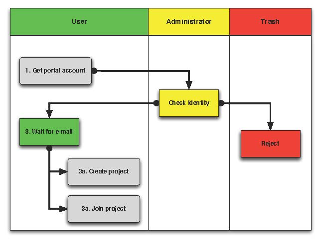
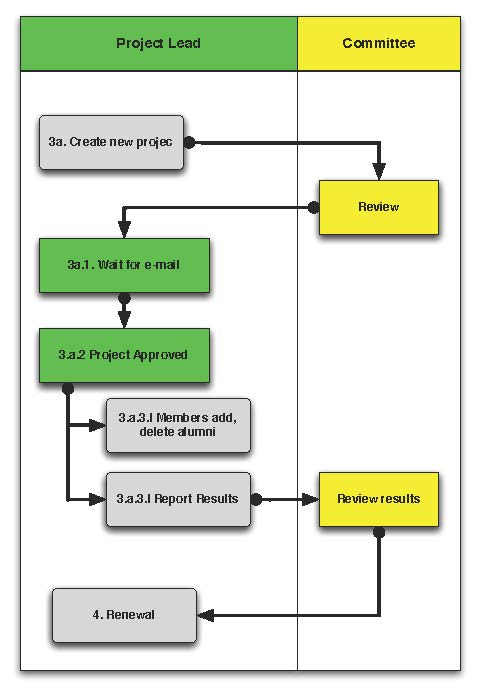
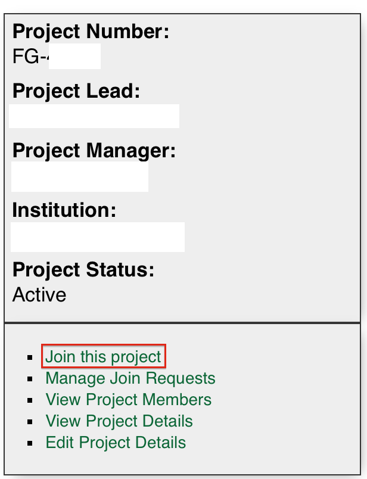
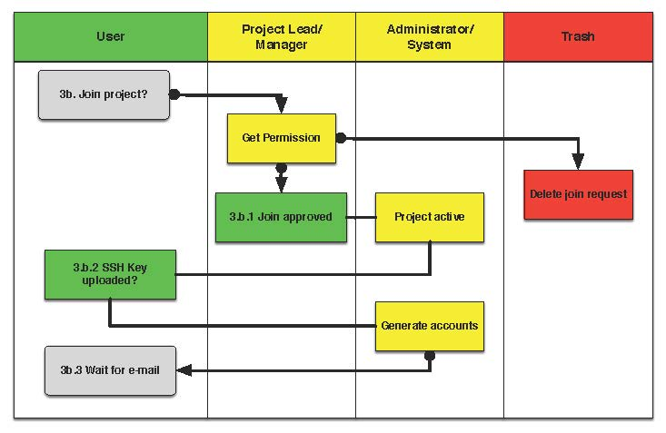

It is very easy to obtain a project and account on FutureGrid. While
it is possible to just execute the three steps in our quickstart
guide, we have provided a more in-depth description based on user
feedback. You have certain responsibilities including managing
project memberships and reporting results that must be conducted
while you use FutureGrid, thus it is a good idea to read this section
carefully. At the end of the section we also provide a mini-FAQ
of information that may be of help with respest to issues you may have
overlooked or that have not yet been answered. Some screencasts about this
topic are available in section Screencast: Using FutureGrid.
In order to utilize any FutureGrid resource, you must possess a
FutureGrid portal account. Thus, apply for your portal
account before you attempt anything else. This account is used to
gather some information that we will use in the next steps. You must
make sure that the information is complete before you proceed to the
second step. FutureGrid performs basic verification of the information
you provide when creating an account, so it may take a little while
before your account is approved. Once you have a portal account, please
proceed.
Please note that you cannot access FutureGrid resources until you
complete the next steps.
Here are a few tips that make it easy for you
- On the portal’s main page at https://portal.futuregrid.org
appears
a link.
- Following you will be able to Create a new account on the
portal.
- Fill in ALL fields as much as you can.
- Note that fields with * are mandatory
- It is important that you specify your address information completely.
- If you are a graduate or undergraduate student please fill out your
advisor’s contact information in the field specially dedicated for it.
If he has a FutureGrid Portal name, please include his portal name
if you know it.
- If you have an e-mail address from your institution, we ask that you
use this address instead of one from gmail, hotmail, or other e-mail
services that we cannot trace back to your name or institution.
- Usage of all non institutional addresses will prolong the application
process.
- Please note that creating a portal account does not give you access
to any FutureGrid resources.
- Please remember that checking your information will take time. Thus
we recommend that you wait till you get a message that tells you that
your portal account has been approved. Then continue to The next
step. We are not conducting any portal approval outside of 10am-4pm
EST. If there are no problems verifying your information your
approval will take 1-2 days; if we have problems verifying your
data or something else is not right your approval will be
delayed. If you appear to be a spammer we will not notify you.
- If you are teaching a class, we have some special
instructions for you in Section s-account-class.
- After your account has been approved, you can correct the
information as part of the portal account User Profile
Management.
Legend
| State |
Description |
|---|
- Get Portal Account
|
Apply for a portal account at https://portal.futuregrid.org/user/register |
| Check Identity |
Administrator checks the data submitted. |
| Reject |
Rejected accounts will be deleted without notification. |
- Wait for e-mail
|
Wait for the e-mail that approves your portal account.
If you have not heard from us within 2 buisiness days
use the help form on the portal to contact us. |
| 3a. Create Project |
Create a new Project. |
| 3b. Join Project |
Join an existing Project. |

To apply for a new project, fill out the project creation form. Through this
form we gather some important information about the project so that we can
review it for approval. This information is used to report and document
to us as well as to our sponsors, to state which activities are
conducted on FutureGrid. The more precise you are in your descriptions
and filling out the forms the better we can highlight your
project. Once a project is approved, project members can join a
project. This must be conducted by the project lead.
It is mandatory for the project lead to agree to certain reporting requirements so
as to provide information to FutureGrid. He will be responsible to make sure that they
are completed and also implemented with the users joining the project.
Thus the user is responsible to comply with the terms of the project in
regards to reporting and acknowledgments in case of publications. Each
project Project Lead has the responsibility to communicate such requirements to
the members and managers. The project agreements override the
individuals agreement.

Legend
| State |
Description |
|---|
| 3a. Create new Project |
Fill out the project form at https://portal.futuregrid.org/node/add/fg-projects |
| Review |
Committee reviews the project and corresponds with project lead to improve |
| 3a.1. Wait for e-mail |
Wait for an e-mail that you have an account |
| 3a.2. Project Approved |
The project has been approved. |
| 3a.3.i. Members add, del., alumni |
Manage the project members |
| 3a.3.ii. Report Results |
Make project member Alumni |
| Review Results |
Committee receives results for review |
| Renewal |
Renewal of the project |
When applying for a project, you may directly visit the project
creation page and fill it out. However, you may find it useful to
prepare a separate (ASCII, or MS word) document and take advantage of
spelling and grammar checkers. Furthermore, as filling out the form
may take some time, it seems best to just copy and paste from your
document into the form. This way you may avoid issues such as power
failures or network interruptions which could cause you to lose the
information that has been entered on the form but not yet submitted.
Examples for a project can be found also on the portal itself
when looking at the list of projects conducted on Futuregrid:
Recently we have increased the requirements for project
approval. Hence it is important that you write a couple of paragraphs
in the application. A single sentence such as I want to learn cloud
computing will typically no longer be approved. Please examine a
sample class project which could be an inspiration
for your own class projects (project.txt):
Title: Course: Example Course On Advanced Cloud Computing
Project Keywords:
Course, Cloud, OpenStack, Eucalyptus
Project Lead:
Gregor von Laszewski (portalname)
Project Manager:
Gregor von Laszewski (portalname)
Project Members:
Fugang Wang (use portalname)
Albert Elfstein (use portalname)
Project Alumni:
Project Orientation: *
- [ ] Research
- [x] Education
- [ ] Industry
- [ ] Government
Primary Discipline: *
Computer Science
Abstract: *
=========
Note: this is an example project and is not a real project,
although the contents presented in this material is available.
This course will introduce the students at Indiana University as
part of the Summer Semester 2012 into the essentials of Cloud
Computing and HPC. We will start the course by teaching the
students python within one week. As cloud computing framework we
have chosen OpenStack, as it has become one of the ubiquitous IaaS
frameworks and is available on FutureGrid (Sierra). Additionally,
we will teach the students how to program a simple MPI application
so that they can further develop the virtual cluster code available
from github (https://github.com/futuregrid/virtual-cluster).
We will compare the performance between the virtualized and non
virtualized environment as develop with the help of our cloud
metrics system a scheduler that enables us to use bare metal
provisioned clusters and virtualized clusters on-demand based on
resource requirements and specifications. We are aware that the
FutureGrid team is developing such an environment, and would like to join
the efforts throughout our course with the contributions conducted
by the students.
Course Dates:
This class will be taught in 10 weeks as part of the Indiana
University CS curriculum. The following dates are important
Start: July 13, 2013
End: Sept 23, 2013
Extension: 1 month for students with programming in-completes.
Course Outline (tentative):
1. Introduction and Overview
2. Essential Python for the Cloud
3. Introduction to OpenStack
4. Programming OpenStack
5. Programming a HPC Cluster
6. Creating a Virtual Cluster
7. Performance Comparison
8. Cloud Metrics
9. Cloudmesh
10. Joining FutureGrid Software Developments
Grading Policies:
Class participation and contribution: 5%
Homework assignments, reading summary, and paper presentation: 50%
Programming assignments: (30%)
Reading Summaries: (10%)
Paper Presentation: (10%)
Course Project: 50%
Proposal: (10%)
Midterm Presentation: (10%)
Final Presentation and Demo: (15%)
Final Report: (15%)
Note:
Homework and programming assignments are due by 11:59pm
Thursdays (unless announced in class otherwise). Late homework
(non-programming) will NOT be accepted. Late program penalty
is 10% per day, according to the timestamp of your online
submission. Only when verifiable extenuating circumstances can
be demonstrated will extended assignment due dates be
considered. Verifiable extenuating circumstances must be
reasons beyond control of the students, such as illness or
accidental injury. Poor performance in class is not an
extenuating circumstance. Inform your instructor of the
verifiable extenuating circumstances in advance or as soon as
possible. In such situations, the date and nature of the
extended due dates for the assignments will be decided by the
instructor.
Please note that FutureGrid does not approve accounts on the
weekends. Regular support hours are Mo-Fri 9am - 5pm. Please
note that answering support questions does take time. Do not
start the night before the homework is due. Plan your
programming assignments to be done early.
Intellectual Merit: *
===================
The course will be introducing the students to cloud computing and
will also be used to derive new class materiel that we will be
using in subsequent lessons.
Broader Impact: *
===============
This class will be educating a number of students in cloud
computing programming. Cloud computing is an important factor in
job availability after graduation of students, thus this course
will be useful to increase marketability of the students. In
addition we have in the past also been able to increase
participation of minority students. In the past we had 10 minority
students and 9 female students taking this class. We intend to work
together with Gregor von Laszewski and improve the FutureGrid
manual and to make our course material available via FutureGrid
through its github and community portal pages.
Scale of use: *
=============
We anticipate the course will have 30-35 students. The course
will be using OpenStack and HPC compute resources and requires for
selected students access to bare metal provisioning. The course
will not require to run computationally intense
applications. However, we require that students be able to run up
to 30 VMs at a time. We know that this may in peak hours be beyond
the capabilities of FutureGrid and are advising our students to
kill machines if they are not used. The maximum duration of a
single VM will typically be less than 5 minutes.
Results:
========
To join an existing project, ask the project lead or project manager for that
project to add you to their project using your portal account name.
However for most projects there is an easier way if the project
is set to “accept public join request”, you may also send a request in
the portal. To do this, first view the project list and go to the project
detail page by clicking the project title. If the project is set by the
project lead to “accept join request”, then you’ll see a large gray
‘Join this project’ button in the upper right corner of the page. Click
the button to send the join request to the project lead and manager so that
they can process your request:

The entire process looks as follows:

Legend
| State |
Description |
|---|
| 3b. Join Project? |
Join an existing Project. |
| Get Permission |
Get permission from the project lead or manager to join the project. |
| Delete Join Request |
Project leads will carefully evaluate if the person requesting to join is eligible. If not join requests will be deleted without notification requires to those that want to join. |
| 3b.1. Join Approved |
The project lead has approved that you join the project. Go to the project page and press the join button/link. |
| Project Active |
Checks if the project is active the project. |
| 3b.2. SSH key uploaded? |
You must have uploaded your ssh key to use FutureGrid resources |
| Generate Accounts |
Generate accounts to resources |
| 3b.3. Wait for e-mail |
Wait for an e-mail that you have an account |
Deletion of a user can be a complex process if a user has used FG
resources. However, the following is for most project leads
sufficient: To remove a user from your project you simply can edit
your project page and remove the user name from the list of members or
alumni. If the user is in no other valid project she will no longer
be able to use FG. If the user really needs to be removed from the
system or from the portal, please fill out the help form with the username and the
reason why he should be removed. Naturally, if you detect that a user
is acting maliciously, please inform us immediately. We will disable
access. Put in your subject line the prefix URGENT.
It is important to regularly report results of your projects to
FutureGrid. Please fill out this section and report upon the
achievements of this project. You find your projects in a
Also upload references that you have produced for this project. You
can upload when visiting your project and using the plus button in
your projects. The reference will then be added and added for you to
the portal.
Closing a project is an important responsibility of every project
lead. Incase you forget which project you want to close, you can find the
on the Portal. Once you visit one of them, you have the option to add
results. Scroll down until you find the section “Project
Results”. Please fill out this section and report upon the
achievements of this project. Please also upload references that you
have produced for this project. In each case, please make sure that
you only upload/report references directly related to this project.
After you have requested a project closing, our project committee will
work with you to make sure we have sufficient results from you. Once a
project is closed, all its members will be notified. The committee might ask
you for additional results even after the project is closed.
In order to be able to log into the started VMs, among other purposes,
you need to provide FG with a secure-shell (ssh) public key. If you are
already a frequent user of ssh, and have a private and public key pair,
it is perfectly reasonable to provide your public key. It’s public,
after all.
To upload the chosen public key:
- Copy your public identity into your system clipboard.
- Visit the ssh-key panel of your account.
- Click the link that says Add a public key.
If you are not familiar with ssh keys we have provided a more
elaborate section about Using SSH Keys
Changes to keys will take up to 1 hour to propagate through the system
services. You are not allowed to use password less keys. Your account
may be deactivated if you violate this policy.
Often users may not remember the password or username of the FG
portal. However, they may have an easier time to remember their openid
from for example google. It is possible to use your openid account and
register it once you gain access to the portal. Please visit your
to add your favorite OpenID. For example, to add your Google OpenId you simply
click on the Google icon.
To access and use resources, you must
- have a portal account
- be part of a valid project
- have uploaded a public key to the portal that you will use to log
into some of its resources.
Once these conditions are met, you will be able to access the
resources and services that your project has requested and been
authorized to use. See the section Services for a list of FutureGrid
resources and services. This includes cloud and HPC resources. Accounts
to these resources will be automatically generated once you have
conducted the above steps. The turnaround time for you getting access
to the system is typically between 30 minutes and one day.
 Hint
Hint{kind=link}
{kind=link}
{kind=link}
{kind=link}